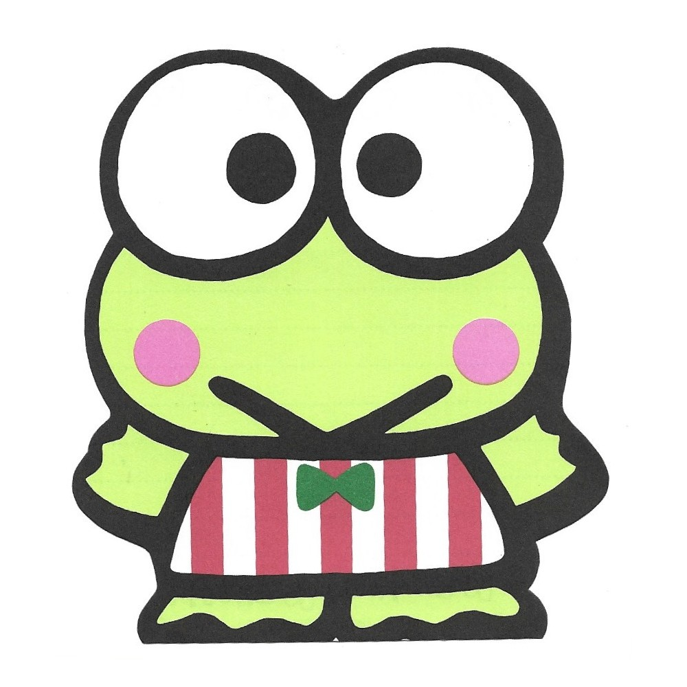
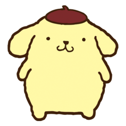

Hello Kitty, também conhecida por seu nome completo Kitty White, é uma personagem criada pela empresa
japonesa Sanrio. Apesar do bigode, das orelhas e do nome, Sanrio retrata Hello Kitty como uma jovem gijinka
de um Bobtail Japonês com um laço vermelho e, notavelmente, sem boca.

O Keroppi foi criado pela Sanrio, mesma empresa que criou a Hello Kitty.
Keroppi nasceu no dia 10 de Julho de 1987. Ele vive com seus irmão gêmeos, Koroppi e Pikki, e com seus pais
numa grande casa à beira da Lagoa Donut, a maior e mais azul lagoa da região.

O Pompompurin é um tranquilo filhotinho Golden Retriever que tem um enorme talento para cochilar. Ele ama a
frase “vamos sair”, tanto quanto odeia a palavra “ficar”. Faz amizade com todos que encontra, e tem um sonho
de ser realmente grande.